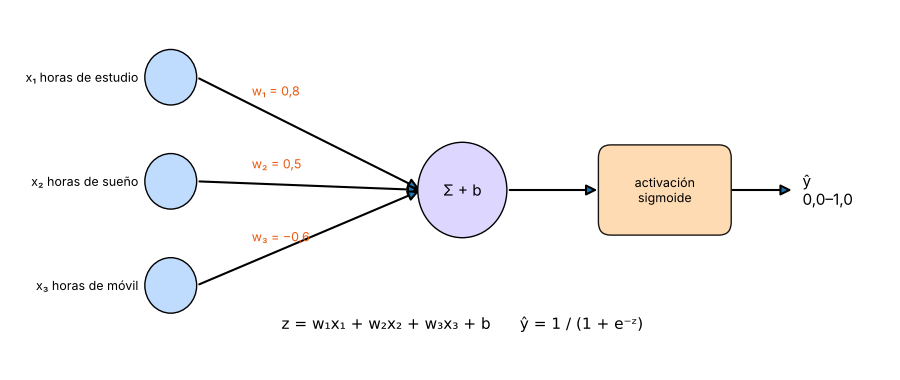

UD5 · Aprendizaje automático
Cómo aprende una máquina a partir de datos: preparar los datos, elegir y entrenar modelos, evaluarlos con rigor, entender las redes neuronales y detectar los sesgos y errores que pueden dañar a las personas.
Libro de referencia: J. F. Puentes Calvo, Tecnologías Inteligentes (2025), capítulos 14–18. Requisitos: Pandas, EDA y normalización de la UD2 (ejercicios E20–E27) e introducción a ML de la Teoría, sección 10. Todo el código usa datasets incluidos en scikit-learn: funciona sin internet.
| Sesiones | Bloque | Libro | Criterio |
|---|---|---|---|
| 1–3 | Ciencia de datos y ciclo de vida de los datos; anonimización | 15 | CA5.1, CA5.2 |
| 4–5 | Preparación: normalización y reducción de dimensionalidad | 14, 15 | CA5.3 |
| 6–8 | Tipos de aprendizaje; regresión lineal | 14.3, 16.1 | CA5.4, CA5.6 |
| 9–12 | Clasificación: regresión logística, árboles, k vecinos, SVM | 16.2–16.3 | CA5.6 |
| 13–15 | Evaluación: métricas, sobreajuste, validación cruzada, hiperparámetros | 14.4–14.5 | CA5.5 |
| 16–17 | Ensembles: random forest y boosting; multiclase | 16.4–16.6 | CA5.5, CA5.6 |
| 18 | No supervisado: k-means y PCA | 16.7 | CA5.3, CA5.4 |
| 19–20 | Redes neuronales: perceptrón, MLP, CNN, RNN, generativas | 17 | CA5.4 |
| 21–22 | Sesgos, ética y explicabilidad; el ML en el mundo real (ampliación) | 18 | CA5.7, CA5.8 |
| 23–25 | Proyecto final y exposición | — | CA5.7 |
1. Ciencia de datos y ciclo de vida de los datos
La ciencia de datos extrae conocimiento de los datos combinando estadística, programación y conocimiento del tema. El aprendizaje automático es una de sus herramientas: construir modelos que aprenden patrones de ejemplos para predecir o decidir con datos nuevos.
Ciclo de vida de los datos (cap. 15):
- Recolección y selección: ¿qué datos necesitamos?, ¿son representativos?, ¿tenemos permiso para usarlos?
- Limpieza: faltantes, duplicados, errores, formatos (E21).
- Exploración (EDA): estadísticas, gráficos, correlaciones (E26).
- Modelado: entrenar y evaluar modelos.
- Despliegue y vigilancia: poner el modelo en uso y comprobar que sigue funcionando.
Cada fase tiene sus perfiles profesionales: ingeniería de datos (recogida y almacenamiento), análisis de datos (exploración e informes), ciencia de datos e ingeniería de ML (modelos y despliegue).
Anonimizar (CA5.2) es eliminar o transformar los datos que identifican a una persona: quitar nombres, DNI y correos; generalizar (edad exacta → franja; dirección → municipio); y comprobar que ninguna combinación de campos permite reidentificar a alguien (en un pueblo pequeño, «mujer, 17 años, ciclista federada» puede ser una sola persona).
Ejercicio 1.1 · Anonimizar una encuesta 🟡 (reto 18.8 del libro)
Anonimiza esta tabla para compartirla con la clase:
| nombre | edad | concello | usa_ia_horas | opinión | |
|---|---|---|---|---|---|
| Lucía Pérez | lucia@… | 46 | Marín | 3 | Útil pero da miedo |
Datos antes que modelos: etiquetas con ruido
Se suele mejorar un sistema cambiando de modelo (IA centrada en el modelo), pero muchas veces rinde más arreglar los datos (IA centrada en los datos). Un problema típico son las etiquetas equivocadas: alguien marcó mal una imagen, se confundió de casilla o el criterio de etiquetado era ambiguo. Para medir cuánto se ponen de acuerdo dos personas al etiquetar se usa la kappa de Cohen (sección 5); por encima de 0,8 el acuerdo es casi perfecto, y por debajo de 0,4, flojo: hay que aclarar las instrucciones antes de etiquetar más.
import numpy as np
from sklearn.datasets import load_breast_cancer
from sklearn.model_selection import train_test_split, cross_val_predict
from sklearn.pipeline import make_pipeline
from sklearn.preprocessing import StandardScaler
from sklearn.linear_model import LogisticRegression
X, y = load_breast_cancer(return_X_y=True)
X_tr, X_te, y_tr, y_te = train_test_split(X, y, test_size=0.3, random_state=0, stratify=y)
rng = np.random.default_rng(0)
modelo = make_pipeline(StandardScaler(), LogisticRegression(max_iter=1000))
for ruido in [0, 0.1, 0.2, 0.3]:
y_mal = y_tr.copy()
cambiar = rng.choice(len(y_tr), int(ruido * len(y_tr)), replace=False)
y_mal[cambiar] = 1 - y_mal[cambiar] # etiquetas equivocadas
print(f"{ruido:.0%} mal -> exactitud {modelo.fit(X_tr, y_mal).score(X_te, y_te):.3f}")
# 0% 0.959 · 10% 0.936 · 20% 0.918 · 30% 0.924
# Encontrar las sospechosas: el modelo, sin haberlas visto, opina lo contrario con mucha seguridad
y_mal = y_tr.copy()
cambiar = rng.choice(len(y_tr), 40, replace=False)
y_mal[cambiar] = 1 - y_mal[cambiar]
p = cross_val_predict(modelo, X_tr, y_mal, cv=5, method="predict_proba")[:, 1]
en_contra = np.where(y_mal == 1, 1 - p, p)
sospechosas = np.argsort(en_contra)[::-1][:40]
print(len(set(sospechosas) & set(cambiar)), "de 40") # 33 de 40 estaban de verdad malLa exactitud baja con el ruido, aunque no de forma regular: depende
de qué etiquetas se cambian (con un 30 % sale algo
mejor que con un 20 %, por azar), y la regresión logística aguanta
bastante bien los errores al azar. Lo interesante es la segunda parte:
con cross_val_predict cada caso se predice con un modelo
que no lo ha visto, y los casos en que el modelo está
muy seguro de lo contrario de su etiqueta son buenos candidatos a
revisar a mano. Aquí, 33 de las 40 primeras sospechosas eran errores de
verdad. No se corrigen solas: una persona las revisa, porque a veces la
que se equivoca es el modelo. Es la idea de herramientas como
cleanlab.
2. Tipos de aprendizaje y de problemas
| Tipo | Datos | Problemas | Ejemplos |
|---|---|---|---|
| Supervisado | Con la respuesta (etiqueta) | Regresión (número) y clasificación (categoría) | Precio de un piso; spam o no |
| No supervisado | Sin etiqueta | Agrupamiento, reducción de dimensionalidad | Segmentar clientes; resumir 30 medidas en 2 |
| Por refuerzo | Recompensas al interactuar | Aprender una estrategia | Robots, videojuegos, AlphaGo |

Vocabulario: cada fila es una
muestra; cada columna de entrada, una
característica (feature, X); la
columna a predecir, la etiqueta u objetivo
(y). El dataset Iris tiene 150 muestras, 4
características (largo y ancho de sépalo y pétalo) y 3 etiquetas
(especies).
Se entrena un modelo, no un algoritmo (reto 14.6): el algoritmo es la receta (regresión logística); el modelo es el resultado de aplicarla a unos datos concretos (los coeficientes aprendidos).
El patrón de scikit-learn, igual para todos los modelos:
modelo = Algoritmo(hiperparámetros) # 1. elegir y configurar
modelo.fit(X_entrenamiento, y_entrenamiento) # 2. aprender
pred = modelo.predict(X_nuevos) # 3. predecir
modelo.score(X_prueba, y_prueba) # 4. evaluarPreparar los datos para el modelo
Los modelos solo entienden números, sin huecos y en escalas comparables. Antes de entrenar hay tres tareas:
| Problema | Solución | Herramienta |
|---|---|---|
| Valores que faltan | Rellenar con la mediana (números) o el valor más frecuente (categorías); si son muy pocas filas, borrarlas | SimpleImputer |
| Categorías sin orden (concello, color) | Una columna 0/1 por categoría (one-hot) | OneHotEncoder, pd.get_dummies |
| Categorías con orden (a reformar < bueno < nuevo) | Números que respeten el orden | OrdinalEncoder |
| Escalas distintas (m² frente a número de baños) | Estandarizar: media 0, desviación 1 | StandardScaler |
¿Por qué no numerar los concellos (Marín = 1, Pontevedra = 2, Vigo = 3)? Porque un modelo lineal entendería que Vigo es «el triple» de Marín o que Pontevedra está «entre» los dos. Escalar es imprescindible en los modelos que miden distancias o usan coeficientes (regresión, k-NN, SVM, redes neuronales) y no hace falta en los árboles, que solo preguntan «¿es mayor que…?».
Un ColumnTransformer aplica a cada columna su
tratamiento, y un Pipeline lo une con el modelo:
import pandas as pd
from sklearn.compose import ColumnTransformer
from sklearn.pipeline import Pipeline, make_pipeline
from sklearn.impute import SimpleImputer
from sklearn.preprocessing import StandardScaler, OneHotEncoder, OrdinalEncoder
from sklearn.linear_model import LinearRegression
pisos = pd.DataFrame({ # datos inventados, precio en miles de €
"concello": ["Marín", "Pontevedra", "Vigo", "Marín", "Vigo", "Pontevedra", "Vigo", "Marín"],
"m2": [70, 90, 85, None, 120, 65, 100, 80],
"estado": ["reformar", "bo", "novo", "bo", "novo", None, "bo", "bo"],
"precio": [95, 180, 230, 120, 330, 120, 250, 130]})
X, y = pisos.drop(columns="precio"), pisos["precio"]
prep = ColumnTransformer([
("num", make_pipeline(SimpleImputer(strategy="median"), StandardScaler()), ["m2"]),
("ord", make_pipeline(SimpleImputer(strategy="most_frequent"),
OrdinalEncoder(categories=[["reformar", "bo", "novo"]])), ["estado"]),
("cat", OneHotEncoder(handle_unknown="ignore"), ["concello"]),
])
modelo = Pipeline([("prep", prep), ("reg", LinearRegression())]).fit(X, y)
print(prep.get_feature_names_out())
# ['num__m2' 'ord__estado' 'cat__concello_Marín' 'cat__concello_Pontevedra' 'cat__concello_Vigo']
nuevos = pd.DataFrame({"concello": ["Vigo", "Lugo"], "m2": [95, 95], "estado": ["bo", "bo"]})
print(modelo.predict(nuevos).round(0)) # [246. 200.]Fíjate en «Lugo»: no estaba en los datos de entrenamiento. Con
handle_unknown="ignore" sus tres columnas de concello valen
0 y el modelo da una estimación «sin concello» en lugar de fallar. Es
una decisión que hay que conocer: el modelo no sabe
nada de Lugo.
Regla de oro: el imputador y el escalador aprenden
(la mediana, la media…) solo de los datos de
entrenamiento y después transforman los de prueba con lo
aprendido. Si se ajustan con todos los datos, la prueba deja de ser una
prueba (fuga de datos, sección 6). Meterlo todo en un
Pipeline lo garantiza.
Más preparación: escalas raras, asimetría, fechas y el pasado
La tabla de arriba resuelve la mayoría de los casos. Estas son las herramientas para los demás, con la trampa que tiene cada una:
| Situación | Herramienta | Ojo |
|---|---|---|
| Una columna con valores extremos (una nota mal tecleada, un sueldo enorme) | RobustScaler: usa la mediana y el rango
intercuartílico |
Con StandardScaler, un solo valor extremo aplasta todos
los demás |
Columna muy asimétrica (seguidores, ingresos,
visitas): df["col"].skew() mayor que 1 |
np.log1p o PowerTransformer |
log1p admite ceros; log no. Dentro de un
Pipeline, con
FunctionTransformer(np.log1p) |
| Huecos que se pueden deducir de filas parecidas | KNNImputer |
Necesita los datos escalados, porque usa distancias |
| Categorías con orden | OrdinalEncoder(categories=[[...]]) |
Sin categories ordena
alfabéticamente: «bo» < «novo» < «reformar» |
| Muchísimas categorías (código postal, centro educativo) | TargetEncoder: cada categoría se sustituye por la media
del objetivo en esa categoría |
Usa la etiqueta para codificar: solo con el entrenamiento y dentro
del Pipeline, o hay fuga |
| Columnas que no aportan | VarianceThreshold (casi constantes),
SelectKBest con mutual_info_classif,
SelectFromModel, RFE |
Siempre dentro del Pipeline (la demostración de fuga de
la sección 6 es justo esto) |
| Recortar extremos en lugar de borrarlos | df["col"].clip(inferior, superior) |
Los límites se calculan con el entrenamiento |
import numpy as np, pandas as pd
from sklearn.preprocessing import OrdinalEncoder, StandardScaler, RobustScaler
estado = pd.DataFrame({"estado": ["bo", "novo", "reformar", "bo"]})
print(OrdinalEncoder().fit(estado).categories_) # ['bo', 'novo', 'reformar']: ¡orden alfabético!
print(OrdinalEncoder(categories=[["reformar", "bo", "novo"]]).fit_transform(estado).ravel()) # [1. 2. 0. 1.]
notas = np.array([[5.0], [6], [7], [6.5], [5.5], [95]]) # 95: alguien escribió 9,5 sin la coma
print(StandardScaler().fit_transform(notas).ravel().round(2)) # [-0.48 -0.45 -0.42 -0.43 -0.46 2.24]
print(RobustScaler().fit_transform(notas).ravel().round(2)) # [-1. -0.2 0.6 0.2 -0.6 71. ]
rng = np.random.default_rng(0)
seguidores = pd.Series(rng.lognormal(mean=5, sigma=1.2, size=1000).round()) # media 275, mediana 136, máximo 5880
print(round(seguidores.skew(), 2), round(np.log1p(seguidores).skew(), 2)) # 5.21 -0.01Con StandardScaler, las cinco notas normales quedan casi
iguales (entre −0,48 y −0,42) porque el 95 se lleva toda la escala; con
RobustScaler siguen separadas y el error destaca (71). Aun
así, lo correcto es corregir el dato, no esconderlo:
escalar no arregla un error de tecleo.
Fechas y el pasado (series temporales). Si se predice algo que cambia con el tiempo (ventas de la cafetería, alumnado que usa el bus, consumo eléctrico del centro), las mejores variables suelen salir de la fecha y de los días anteriores:
import numpy as np, pandas as pd
rng = np.random.default_rng(3)
dias = pd.date_range("2026-09-14", periods=28, freq="D")
df = pd.DataFrame({"data": dias,
"bocadillos": np.where(dias.dayofweek < 5, 120, 40) + rng.integers(-15, 16, 28)}) # inventado
df["dia_semana"] = df["data"].dt.dayofweek # 0 = lunes ... 6 = domingo
df["fin_semana"] = (df["dia_semana"] >= 5).astype(int)
df["ayer"] = df["bocadillos"].shift(1) # el valor del día anterior (retraso o lag)
df["hace_7"] = df["bocadillos"].shift(7) # el mismo día de la semana pasada
df["media_7_mal"] = df["bocadillos"].rolling(7).mean() # ¡incluye el día que se quiere predecir!
df["media_7"] = df["bocadillos"].shift(1).rolling(7).mean() # solo los 7 días anteriores
print(df.iloc[6:10].to_string(index=False))| data | bocadillos | dia_semana | fin_semana | ayer | hace_7 | media_7_mal | media_7 |
|---|---|---|---|---|---|---|---|
| 2026-09-20 | 51 | 6 | 1 | 49 | NaN | 95,6 | NaN |
| 2026-09-21 | 123 | 0 | 0 | 51 | 130 | 94,6 | 95,6 |
| 2026-09-22 | 106 | 1 | 0 | 123 | 107 | 94,4 | 94,6 |
media_7_maldel día 20 ya contiene los 51 bocadillos de ese mismo día: es fuga de datos. Por la mañana todavía no se sabe cuántos se van a vender. Elshift(1)antes delrollinglo evita.- Las primeras filas quedan con
NaN(no hay pasado suficiente): se borran o se empieza a predecir más tarde. - La prueba es siempre el final de la serie, sin
barajar: aquí, la última semana. Con estos datos,
fin_semanasola deja un error medio (MAE) de 6,3 bocadillos, y añadirhace_7ymedia_7lo empeora a 9,3: con tres semanas de historia no hay datos suficientes para que los retrasos ayuden. Copiar el valor de hace 7 días, sin modelo, se equivoca en 10,6. Comparar siempre con una predicción ingenua como esa. Un caso completo, con validación cruzada, en el ejercicio E93.
Características a partir del historial: recencia, frecuencia y valor. Cuando cada persona tiene un historial (compras, préstamos de la biblioteca, entregas de tareas), tres resúmenes funcionan casi siempre: cuánto hace de la última vez (recencia), cuántas veces (frecuencia) y cuánto en total (valor). Se calculan con una fecha de corte: solo con lo que se sabía el día en que se hace la predicción.
import pandas as pd
# Compras con la tarjeta de la cafetería (inventadas)
compras = pd.DataFrame({
"alumno": ["A1", "A1", "A2", "A1", "A3", "A2", "A1", "A2"],
"fecha": pd.to_datetime(["2026-09-15", "2026-10-02", "2026-10-05", "2026-10-20",
"2026-10-21", "2026-10-28", "2026-11-03", "2026-11-04"]),
"euros": [2.5, 3.0, 1.8, 2.5, 4.0, 1.8, 3.5, 2.0],
})
corte = pd.Timestamp("2026-11-01") # predecimos el 1 de noviembre...
pasado = compras[compras["fecha"] < corte] # ...con lo que se sabía ese día
carac = pasado.groupby("alumno").agg(
ultima=("fecha", "max"),
frecuencia=("fecha", "count"),
valor=("euros", "sum"),
)
carac["recencia_dias"] = (corte - carac["ultima"]).dt.days
carac["media_ticket"] = (carac["valor"] / carac["frecuencia"]).round(2) # nunca divide entre 0: hay al menos 1 compra
print(carac.drop(columns="ultima"))
# frecuencia valor recencia_dias media_ticket
# alumno
# A1 3 8.0 12 2.67
# A2 2 3.6 4 1.80
# A3 1 4.0 11 4.00
mal = compras.groupby("alumno")["euros"].sum() # FUGA: incluye compras del 3 y 4 de noviembre
print(mal.to_dict()) # {'A1': 11.5, 'A2': 5.6, 'A3': 4.0}Otras ideas habituales, todas con la misma regla: partes de la fecha (día de la semana, mes), cocientes (gasto medio por compra; decidir antes qué hacer si el denominador puede ser 0), agregados por persona (media, máximo, desviación) y combinaciones de dos columnas que tengan sentido juntas. Una característica que mejora mucho la nota en el ordenador pero usa datos del futuro no sirve: el día de verdad no existirá.
3. Regresión lineal
Busca la recta (o el plano, con varias características) que mejor se ajusta a los datos: y ≈ a + b·x. «Mejor» significa que minimiza la suma de los errores al cuadrado. El nombre «regresión» viene de Francis Galton, que observó que los hijos de padres muy altos tendían a «regresar» hacia la estatura media (reto 14.8: investígalo sin IA).
import numpy as np
from sklearn.linear_model import LinearRegression
horas = np.array([1, 2, 2, 3, 4, 5, 5, 6, 7, 8]).reshape(-1, 1) # X debe ser una matriz
nota = np.array([3.5, 4.0, 5.0, 5.5, 6.0, 6.8, 7.2, 7.5, 8.4, 9.0])
modelo = LinearRegression().fit(horas, nota)
print(f"nota ≈ {modelo.intercept_:.2f} + {modelo.coef_[0]:.2f} · horas") # 2.95 + 0.78 · horas
print(modelo.predict([[4.5]])) # [6.45]
print(f"R² = {modelo.score(horas, nota):.3f}") # 0.974Interpretación: cada hora de estudio suma, de media, 0,78 puntos. R² mide qué parte de la variación de la nota explica el modelo (1 = toda). Cuidado: correlación no es causalidad, y extrapolar es peligroso: con 20 horas predeciría un 18,5.
Métricas de regresión. R² no lo dice todo: también interesa cuánto se equivoca el modelo, en las unidades de lo que predice.
| Métrica | Cálculo | Se lee como |
|---|---|---|
| MAE (error absoluto medio) | Media de |real − predicho| | «Se equivoca, de media, en 0,4 puntos» |
| RMSE (raíz del error cuadrático medio) | √ media de (real − predicho)² | Igual, pero castiga más los errores grandes |
| R² | 1 − error del modelo / error de predecir siempre la media | 1 = perfecto; 0 = no mejora a la media; puede ser negativo |
MAPE
(mean_absolute_percentage_error) |
Media de |real − predicho| / |real| | «Se equivoca un 8 % de media». Fácil de explicar, pero explota si algún valor real es 0 o casi: con un 0 real y un 1 predicho da 2 × 10¹⁵ |
Curvas y regularización. Si la relación no es una recta, se pueden añadir columnas con los cuadrados y productos de las originales (regresión polinómica). Pero cuantas más columnas, más fácil memorizar. La regularización penaliza los coeficientes grandes, como un profesor que dice «resuélvelo, pero con una respuesta sencilla»:
| Modelo | Penalización | Efecto |
|---|---|---|
| Ridge (L2) | Suma de los coeficientes al cuadrado | Encoge todos los coeficientes, no elimina ninguno |
| Lasso (L1) | Suma de los valores absolutos | Pone algunos coeficientes exactamente a 0: elige características |
| ElasticNet | Mezcla de las dos | Un punto intermedio |
El hiperparámetro alpha regula la fuerza: más alto,
modelo más simple. Con el conjunto de datos de diabetes
de scikit-learn (442 pacientes, 10 medidas, progresión de la enfermedad
a un año):
from sklearn.datasets import load_diabetes
from sklearn.model_selection import train_test_split
from sklearn.linear_model import LinearRegression, Ridge, Lasso
from sklearn.preprocessing import PolynomialFeatures, StandardScaler
from sklearn.pipeline import make_pipeline
from sklearn.metrics import mean_absolute_error, mean_squared_error
X, y = load_diabetes(return_X_y=True, as_frame=True)
X_tr, X_te, y_tr, y_te = train_test_split(X, y, test_size=0.25, random_state=42)
modelos = {
"Lineal": LinearRegression(),
"Polinómica grado 2": make_pipeline(PolynomialFeatures(2), StandardScaler(), LinearRegression()),
"Polinómica + Ridge": make_pipeline(PolynomialFeatures(2), StandardScaler(), Ridge(alpha=10)),
"Lasso": make_pipeline(StandardScaler(), Lasso(alpha=1)),
}
for nombre, m in modelos.items():
p = m.fit(X_tr, y_tr).predict(X_te)
print(f"{nombre:<20} R² entr. {m.score(X_tr, y_tr):.2f} · prueba {m.score(X_te, y_te):.2f} · "
f"MAE {mean_absolute_error(y_te, p):.1f} · RMSE {mean_squared_error(y_te, p) ** 0.5:.1f}")| Modelo | R² entrenamiento | R² prueba | MAE | RMSE |
|---|---|---|---|---|
| Lineal | 0,52 | 0,48 | 41,5 | 53,4 |
| Polinómica grado 2 | 0,60 | 0,42 | 44,0 | 56,4 |
| Polinómica + Ridge | 0,59 | 0,49 | 40,9 | 53,1 |
| Lasso | 0,51 | 0,50 | 41,4 | 52,8 |
La polinómica mejora en entrenamiento y empeora en
prueba: sobreajusta (sección 6). Con Ridge recupera lo perdido. Lasso,
con un modelo más sencillo, da el mejor resultado en prueba y además
anula la columna s2. Un R² de 0,5 parece poco, pero es lo
habitual con datos médicos reales: la progresión de una enfermedad
depende de muchas cosas que no están en la tabla.
Ejercicio 3.1 · Datos abiertos de Galicia 🟡 (retos 16.8–16.9, tarea)
Elige un dataset numérico de abertos.xunta.gal o de datos.gob.es (temperaturas, consumo, población…), entrena una regresión lineal y dibuja predicción frente a valor real.
Ejercicio 3.2 · Ridge, Lasso y cuántas columnas sobran 🟡
Con el conjunto de diabetes y la misma división de la sección 3,
entrena Lasso (con StandardScaler delante)
para alpha = 0,1; 1; 5 y 10. Para cada valor anota el R² de
prueba y cuántos coeficientes valen exactamente 0. ¿Qué
alpha elegirías y por qué? ¿Qué ventaja tiene un modelo con
menos columnas aunque acierte casi lo mismo?
4. Clasificación
| Modelo | Idea | Ventaja | Inconveniente |
|---|---|---|---|
| Regresión logística | Combina las características y las pasa por una curva en S que da una probabilidad | Rápida, interpretable | Fronteras solo rectas |
| k vecinos (k-NN) | Mira los k ejemplos más parecidos y vota | Muy intuitiva | Lenta con muchos datos; necesita escalar |
| Árbol de decisión | Una secuencia de preguntas sí/no | Se puede dibujar y explicar | Sobreajusta con facilidad |
| SVM | Busca la frontera con el mayor margen entre clases | Muy buena con pocos datos | Difícil de interpretar; necesita escalar |
| Naive Bayes | Probabilidades de cada característica por clase | Excelente con texto | Supone independencia |
Ejemplo con el dataset de cáncer de mama que usa el libro (569 casos, 30 medidas de las células; 0 = maligno, 1 = benigno):
from sklearn.datasets import load_breast_cancer
from sklearn.model_selection import train_test_split
from sklearn.preprocessing import StandardScaler
from sklearn.linear_model import LogisticRegression
from sklearn.pipeline import make_pipeline
from sklearn.metrics import confusion_matrix, classification_report
X, y = load_breast_cancer(return_X_y=True)
X_tr, X_te, y_tr, y_te = train_test_split(X, y, test_size=0.25, random_state=42, stratify=y)
modelo = make_pipeline(StandardScaler(), LogisticRegression(max_iter=1000))
modelo.fit(X_tr, y_tr) # el escalador se ajusta SOLO con entrenamiento
pred = modelo.predict(X_te)
print(confusion_matrix(y_te, pred)) # [[52 1]
# [ 1 89]]
print(classification_report(y_te, pred, target_names=["maligno", "benigno"]))make_pipeline encadena el escalado y el modelo, y
garantiza que el escalador aprende la media y la desviación
solo de los datos de entrenamiento.
stratify=y mantiene la misma proporción de clases en
entrenamiento y prueba.
5. Evaluar un clasificador
Matriz de confusión (clasificación binaria, con «maligno» como clase positiva que queremos detectar):
| Predicho maligno | Predicho benigno | |
|---|---|---|
| Real maligno | Verdadero positivo (VP) | Falso negativo (FN): un tumor que no se detecta |
| Real benigno | Falso positivo (FP): una alarma innecesaria | Verdadero negativo (VN) |

| Métrica | Fórmula | Pregunta que responde |
|---|---|---|
| Exactitud (accuracy) | (VP + VN) / total | ¿Qué proporción acierta? Engañosa si las clases están desequilibradas |
| Precisión | VP / (VP + FP) | De los que marco como positivos, ¿cuántos lo son? |
| Exhaustividad (recall) | VP / (VP + FN) | De los positivos reales, ¿cuántos detecto? |
| Especificidad | VN / (VN + FP) | De los negativos reales, ¿cuántos descarto bien? |
| Tasa de falsos positivos | FP / (FP + VN) = 1 − especificidad | ¿Qué parte de los negativos marco por error? La curva ROC la dibuja frente a la exhaustividad |
| F1 | media armónica de precisión y exhaustividad | Equilibrio entre ambas |
| AUC-ROC | área bajo la curva ROC | Capacidad de separar las clases con cualquier umbral |
Elegir la métrica según el coste del error: en un cribado de cáncer un falso negativo es gravísimo, así que se prioriza la exhaustividad aunque haya más falsas alarmas. En un filtro antispam un falso positivo (perder un correo importante) es peor, así que se prioriza la precisión.
Mover el umbral. Un clasificador como la regresión
logística no da directamente «sí» o «no»: da una
probabilidad, y predict dice «sí» a partir
de 0,5. Ese umbral se puede mover. Si lo bajamos, el modelo marca más
casos como positivos: detecta más (sube la exhaustividad) pero da más
falsas alarmas (baja la precisión). La curva ROC dibuja
este equilibrio para todos los umbrales, y el AUC es el
área bajo ella (0,5 = azar, 1 = perfecto).
from sklearn.datasets import load_breast_cancer
from sklearn.model_selection import train_test_split
from sklearn.preprocessing import StandardScaler
from sklearn.linear_model import LogisticRegression
from sklearn.pipeline import make_pipeline
from sklearn.metrics import confusion_matrix, recall_score, precision_score, roc_auc_score
X, y = load_breast_cancer(return_X_y=True)
y = 1 - y # ahora 1 = maligno: la clase que queremos detectar
X_tr, X_te, y_tr, y_te = train_test_split(X, y, test_size=0.25, random_state=42, stratify=y)
m = make_pipeline(StandardScaler(), LogisticRegression(max_iter=1000)).fit(X_tr, y_tr)
prob = m.predict_proba(X_te)[:, 1] # probabilidad de maligno
print("AUC:", round(roc_auc_score(y_te, prob), 3)) # AUC: 0.996
for umbral in (0.5, 0.3, 0.1, 0.05):
pred = (prob >= umbral).astype(int)
vn, fp, fn, vp = confusion_matrix(y_te, pred).ravel()
print(f"umbral {umbral}: exhaustividad {recall_score(y_te, pred):.3f} · "
f"precisión {precision_score(y_te, pred):.3f} · FN {fn} · FP {fp}")| Umbral | Exhaustividad | Precisión | Tumores no detectados (FN) | Falsas alarmas (FP) |
|---|---|---|---|---|
| 0,5 | 0,925 | 0,980 | 4 | 1 |
| 0,3 | 0,962 | 0,981 | 2 | 1 |
| 0,1 | 0,981 | 0,897 | 1 | 6 |
| 0,05 | 1,000 | 0,828 | 0 | 11 |
En un cribado se elegiría un umbral bajo: once falsas alarmas (que se descartan con otra prueba) son preferibles a un tumor sin detectar. El umbral no se elige mirando los datos de prueba, sino con validación cruzada sobre el entrenamiento; aquí se usan los de prueba solo para enseñar el efecto.
Clases desequilibradas. Si solo el 3 % de los casos
son positivos (fraude, una enfermedad rara), un modelo que diga siempre
«no» acierta el 97 % y no sirve para nada (ejercicio 5.1). Soluciones:
medir con exhaustividad, precisión y F1 en lugar de exactitud; dar más
peso a los errores de la clase rara
(class_weight="balanced"); mover el umbral; o generar
ejemplos sintéticos de la clase rara (SMOTE, librería
imbalanced-learn), solo en el
entrenamiento. En una prueba con un 3 % de positivos,
class_weight="balanced" subió la exhaustividad de 0,33 a
0,73, a cambio de bajar la exactitud del 98 % al 90 %: más casos
detectados, más falsas alarmas.
Más de dos clases. Precisión, exhaustividad y F1 se
calculan por clase y luego se promedian. El promedio
macro trata a todas las clases por igual (una clase
pequeña mal clasificada pesa tanto como una grande); el
ponderado (weighted) pesa cada clase según
cuántos casos tiene. Si las dos medias son muy distintas, hay clases
pequeñas que el modelo trata mal. classification_report
muestra las dos.
Línea base y métricas para clases desequilibradas
Primero, una línea base. Antes de presumir de un
modelo hay que compararlo con uno que no mira los
datos: DummyClassifier predice siempre la clase
más frecuente (strategy="most_frequent") o al azar
respetando las proporciones ("stratified"). Si el modelo de
verdad no lo supera claramente, el problema está en los datos o en las
variables, no en el algoritmo.
import numpy as np
from sklearn.datasets import load_breast_cancer
from sklearn.model_selection import train_test_split
from sklearn.preprocessing import StandardScaler
from sklearn.linear_model import LogisticRegression
from sklearn.pipeline import make_pipeline
from sklearn.dummy import DummyClassifier
from sklearn.metrics import (accuracy_score, balanced_accuracy_score, f1_score, matthews_corrcoef,
roc_auc_score, average_precision_score, log_loss)
X, y = load_breast_cancer(return_X_y=True)
y = 1 - y # 1 = maligno
rng = np.random.default_rng(0)
idx = np.concatenate([np.where(y == 0)[0], # todos los benignos...
rng.choice(np.where(y == 1)[0], 20, replace=False)]) # ...y solo 20 malignos
X, y = X[idx][:, [1, 4]], y[idx] # solo textura y suavidad: un problema difícil
X_tr, X_te, y_tr, y_te = train_test_split(X, y, test_size=0.3, random_state=0, stratify=y)
modelos = {"Siempre «benigno»": DummyClassifier(strategy="most_frequent"),
"Al azar (proporción)": DummyClassifier(strategy="stratified", random_state=0),
"Regresión logística": make_pipeline(StandardScaler(), LogisticRegression(max_iter=1000)),
"Logística equilibrada": make_pipeline(StandardScaler(),
LogisticRegression(max_iter=1000, class_weight="balanced"))}
for nombre, m in modelos.items():
m.fit(X_tr, y_tr)
pred, prob = m.predict(X_te), m.predict_proba(X_te)[:, 1]
print(nombre, accuracy_score(y_te, pred), balanced_accuracy_score(y_te, pred),
f1_score(y_te, pred, zero_division=0), matthews_corrcoef(y_te, pred),
roc_auc_score(y_te, prob), average_precision_score(y_te, prob), log_loss(y_te, prob))Solo el 5,3 % de los casos son malignos (6 de 114 en la prueba):
| Modelo | Exactitud | Exactitud equilibrada | F1 | MCC | AUC-ROC | AP (área PR) | Log loss |
|---|---|---|---|---|---|---|---|
| Siempre «benigno» | 0,947 | 0,500 | 0 | 0 | 0,500 | 0,053 | 1,90 |
| Al azar (proporción) | 0,886 | 0,468 | 0 | −0,06 | 0,468 | 0,053 | 4,11 |
| Regresión logística | 0,947 | 0,657 | 0,40 | 0,38 | 0,918 | 0,574 | 0,13 |
| Logística equilibrada | 0,746 | 0,787 | 0,26 | 0,28 | 0,912 | 0,547 | 0,50 |
La regresión logística tiene la misma exactitud que el modelo que siempre dice «benigno»: mirando solo la exactitud parecerían iguales. Las demás métricas sí ven la diferencia:
| Métrica | Qué mide | Cuándo usarla |
|---|---|---|
Exactitud equilibrada
(balanced_accuracy_score) |
La media de la exhaustividad de cada clase | Clases desequilibradas: el modelo trivial saca siempre 0,5 |
MCC (matthews_corrcoef) |
Una correlación entre lo real y lo predicho, de −1 a 1 (0 = azar) | Un único número fiable aunque las clases estén muy desequilibradas |
AP o área bajo la curva
precisión-exhaustividad
(average_precision_score,
precision_recall_curve) |
Como el AUC, pero mirando solo cómo se encuentra la clase rara | Con una clase muy rara: el AUC-ROC puede parecer alto (0,918) cuando la precisión real es pobre (AP 0,574). El azar da la proporción de positivos (0,053), no 0,5 |
Log loss (log_loss) |
Castiga las probabilidades muy seguras y equivocadas: −ln(0,9) = 0,11, pero −ln(0,01) = 4,6 | Cuando importa que las probabilidades sean creíbles (un 80 % debe acertar 8 de cada 10 veces) |
Kappa de Cohen
(cohen_kappa_score) |
Acuerdo con la realidad descontando el que se daría por azar | Muy usada para comparar dos evaluadores humanos |
class_weight="balanced" sube la exactitud equilibrada
(de 0,657 a 0,787: detecta más malignos), pero baja la exactitud y la
precisión: es el mismo equilibrio que mover el umbral. Qué conviene
depende del coste de cada error, no de la métrica. Con solo 6 casos
positivos en la prueba, estos números cambian mucho con otra división:
con tan pocos casos, validación cruzada.
Para dibujarlo:
ConfusionMatrixDisplay.from_estimator(m, X_te, y_te),
RocCurveDisplay.from_estimator(...) y
PrecisionRecallDisplay.from_estimator(...) (de
sklearn.metrics) hacen la matriz y las curvas en una
línea.
¿Me fío de la probabilidad? Calibración
Muchas decisiones no usan la clase, sino la probabilidad: «avisar si el riesgo pasa del 30 %». Eso solo tiene sentido si el modelo está calibrado: de todos los casos en que dice «70 %», deben ser positivos más o menos el 70 %. Se comprueba agrupando las predicciones por tramos y comparando lo que dice el modelo con lo que pasó de verdad. La puntuación de Brier (el error cuadrático medio entre probabilidad y resultado, de 0 a 1; cuanto más baja, mejor) lo resume en un número.
from sklearn.datasets import make_classification
from sklearn.model_selection import train_test_split
from sklearn.naive_bayes import GaussianNB
from sklearn.linear_model import LogisticRegression
from sklearn.calibration import calibration_curve, CalibratedClassifierCV
from sklearn.metrics import brier_score_loss, accuracy_score
X, y = make_classification(n_samples=6000, n_features=20, n_informative=5,
n_redundant=10, random_state=0)
X_tr, X_te, y_tr, y_te = train_test_split(X, y, test_size=0.5, random_state=0)
modelos = {
"Naive Bayes": GaussianNB(),
"Regresión logística": LogisticRegression(max_iter=1000),
"Naive Bayes calibrado": CalibratedClassifierCV(GaussianNB(), method="isotonic", cv=5),
}
for nombre, m in modelos.items():
p = m.fit(X_tr, y_tr).predict_proba(X_te)[:, 1]
real, dicho = calibration_curve(y_te, p, n_bins=5)
print(f"{nombre:<22} exactitud {accuracy_score(y_te, p > 0.5):.3f} · Brier {brier_score_loss(y_te, p):.3f}")
print(" dice:", dicho.round(2), "\n real:", real.round(2))| Modelo | Exactitud | Brier | Dice → pasa de verdad |
|---|---|---|---|
| Naive Bayes | 0,844 | 0,132 | 0,02 → 0,14 · 0,98 → 0,89 |
| Regresión logística | 0,832 | 0,124 | 0,08 → 0,08 · 0,93 → 0,91 |
| Naive Bayes calibrado | 0,841 | 0,119 | 0,09 → 0,12 · 0,94 → 0,91 |
Naive Bayes acierta más que la regresión logística,
pero es exagerado: cuando dice «98 %» acierta el 89 %,
y cuando dice «2 %» resulta positivo el 14 %. Si se usara su
probabilidad para decidir, se fiaría demasiado.
CalibratedClassifierCV aprende, con validación cruzada, a
corregir esas probabilidades sin apenas cambiar la exactitud. La
regresión logística suele salir bien calibrada de serie; Naive Bayes,
los árboles, el boosting y las redes neuronales, muchas veces no. Para
el dibujo:
CalibrationDisplay.from_predictions(y_te, p).
Ejercicio 5.1 · El detector que siempre dice «sano» 🟡 (CA5.8)
Una enfermedad afecta al 2 % de la población. Un «modelo» predice siempre «sano». Calcula su exactitud y su exhaustividad sobre 1000 personas. ¿Es un buen modelo?
Ejercicio 5.2 · Calcular métricas a partir de una matriz 🟡
Un modelo de detección de fraude en 1000 transacciones obtiene VP = 40, FN = 10, FP = 60, VN = 890. Calcula exactitud, precisión, exhaustividad y F1.
Ejercicio 5.3 · Elegir el umbral de un cribado 🟡 (CA5.8)
Con la tabla de umbrales de la sección 5 (cáncer de mama), un hospital estima que no detectar un tumor cuesta 10 veces más que una falsa alarma (que se resuelve con otra prueba). Calcula el «coste» de cada umbral como 10·FN + FP. ¿Cuál elegirías? ¿Y si el coste fuera 1 a 1? ¿Por qué no se debería elegir el umbral mirando el conjunto de prueba?
6. Sobreajuste, validación cruzada e hiperparámetros
- Subajuste (underfitting): el modelo es demasiado simple y falla incluso con los datos de entrenamiento.
- Sobreajuste (overfitting): el modelo memoriza los datos de entrenamiento, ruido incluido, y falla con datos nuevos. Síntoma: mucho mejor en entrenamiento que en prueba.

from sklearn.datasets import load_breast_cancer
from sklearn.model_selection import train_test_split
from sklearn.tree import DecisionTreeClassifier
X, y = load_breast_cancer(return_X_y=True)
X_tr, X_te, y_tr, y_te = train_test_split(X, y, test_size=0.3, random_state=0)
for prof in [1, 2, 3, 5, 8, None]:
a = DecisionTreeClassifier(max_depth=prof, random_state=0).fit(X_tr, y_tr)
print(prof, round(a.score(X_tr, y_tr), 3), round(a.score(X_te, y_te), 3))| Profundidad | Entrenamiento | Prueba |
|---|---|---|
| 1 | 0,930 | 0,895 |
| 2–3 | 0,960–0,967 | 0,947 |
| 5 | 0,987 | 0,936 |
| 8 o sin límite | 1,000 | 0,912 |
Con profundidad ilimitada el árbol acierta el 100 % de lo que ya ha visto y empeora con lo nuevo: sobreajuste. La profundidad es un hiperparámetro: un ajuste que fijamos nosotros antes de entrenar (a diferencia de los parámetros, que aprende el modelo).
Validación cruzada (k-fold): se divide el entrenamiento en k partes; se entrena k veces dejando cada vez una parte para validar, y se promedian los resultados. Da una estimación más fiable que una sola división y permite comparar modelos:
from sklearn.model_selection import cross_val_score
from sklearn.neighbors import KNeighborsClassifier
from sklearn.svm import SVC
from sklearn.ensemble import RandomForestClassifier
modelos = {
"Regresión logística": make_pipeline(StandardScaler(), LogisticRegression(max_iter=1000)),
"k vecinos": make_pipeline(StandardScaler(), KNeighborsClassifier()),
"SVM": make_pipeline(StandardScaler(), SVC()),
"Árbol": DecisionTreeClassifier(random_state=0),
"Random Forest": RandomForestClassifier(random_state=0),
}
for nombre, m in modelos.items():
s = cross_val_score(m, X, y, cv=5, scoring="f1")
print(f"{nombre:<20} F1 = {s.mean():.3f} ± {s.std():.3f}")
# Logística 0.985 · k-NN 0.972 · SVM 0.979 · Árbol 0.933 · Random Forest 0.971Búsqueda de hiperparámetros: probar combinaciones de forma sistemática con validación cruzada. Grid search prueba todas; random search, una muestra aleatoria (más rápida cuando hay muchas).
from sklearn.model_selection import GridSearchCV
pipe = make_pipeline(StandardScaler(), SVC())
rejilla = {"svc__C": [0.1, 1, 10, 100], "svc__gamma": ["scale", 0.01, 0.001]}
busqueda = GridSearchCV(pipe, rejilla, cv=5, scoring="f1").fit(X, y)
print(busqueda.best_params_, round(busqueda.best_score_, 3)) # {'svc__C': 10, 'svc__gamma': 0.01} 0.983Sesgo y varianza. Un modelo puede fallar por ser demasiado rígido (alto sesgo: subajuste, como una recta para datos curvos) o demasiado sensible a los datos concretos con los que aprendió (alta varianza: sobreajuste). Hacer el modelo más complejo baja el sesgo y sube la varianza; el objetivo es el punto intermedio, que se busca con validación cruzada.
| Síntoma | Entrenamiento | Prueba | Qué hacer |
|---|---|---|---|
| Subajuste | Bajo | Bajo | Modelo más complejo, mejores características, menos regularización |
| Sobreajuste | Muy alto | Bastante más bajo | Más datos, modelo más simple, regularización, poda, parar antes |
| Buen ajuste | Alto | Parecido al de entrenamiento | — |
Fuga de datos (data leakage). El error más peligroso: el modelo ve, al entrenar, información que no tendrá cuando se use de verdad. Da resultados espectaculares que se hunden en la realidad. Esta demostración usa columnas de puro ruido y una etiqueta al azar, así que ningún modelo honesto puede pasar del 50 %:
import numpy as np
from sklearn.feature_selection import SelectKBest, f_classif
from sklearn.linear_model import LogisticRegression
from sklearn.model_selection import cross_val_score
from sklearn.pipeline import make_pipeline
rng = np.random.default_rng(0)
X = rng.normal(size=(100, 5000)) # 100 alumnos, 5 000 columnas de ruido
y = rng.integers(0, 2, size=100) # «aprobado» al azar
X_mal = SelectKBest(f_classif, k=20).fit_transform(X, y) # elige columnas mirando TODOS los datos
print("Con fuga:", cross_val_score(LogisticRegression(), X_mal, y, cv=5).mean().round(2)) # 0.85
bien = make_pipeline(SelectKBest(f_classif, k=20), LogisticRegression())
print("Sin fuga:", cross_val_score(bien, X, y, cv=5).mean().round(2)) # 0.48Con fuga parece que el modelo acierta un 85 % sobre datos que son
ruido. Pasó porque, entre 5 000 columnas al azar, siempre hay alguna que
por casualidad se parece a la etiqueta, y se eligieron mirando también
los datos de validación. Dentro del Pipeline, la selección
se repite en cada partición solo con su entrenamiento, y el resultado
vuelve a ser el del azar.
| Fuga típica | Ejemplo | Cómo evitarla |
|---|---|---|
| Preparar con todos los datos | Escalar, rellenar huecos o elegir columnas antes de separar | Separar primero; todo dentro de un Pipeline |
| Una columna que es consecuencia de lo que se predice | Predecir si alguien suspende usando «fue a la recuperación» | Preguntarse: «¿sabré esto en el momento de predecir?» |
| Mezclar el tiempo | Datos de 2025 en el entrenamiento para predecir 2024 | En series temporales, entrenar con el pasado y probar con el futuro
(TimeSeriesSplit) |
| Duplicados | La misma persona, o la misma foto, en entrenamiento y en prueba | Quitar duplicados; separar por persona |
| Ajustar con la prueba | Probar 50 configuraciones y quedarse con la que mejor da en la prueba | Ajustar con validación cruzada; la prueba se usa una vez, al final |
Búsqueda aleatoria. Además de
GridSearchCV, RandomizedSearchCV prueba un
número fijo de combinaciones al azar: con muchos hiperparámetros suele
encontrar una muy buena en mucho menos tiempo. Herramientas como Optuna
van más allá y eligen la siguiente combinación según cómo fueron las
anteriores.
best_score_ es optimista: validación cruzada
anidada. La búsqueda prueba muchas combinaciones y se queda con
la que mejor sale en esas mismas particiones. Parte de
esa ventaja es suerte, así que best_score_ promete más de
lo que el modelo dará con datos nuevos. Para medir el proceso completo
(«buscar hiperparámetros y luego entrenar») sin trampa, se mete la
búsqueda dentro de otra validación cruzada: la interna
elige los hiperparámetros y la externa mide con datos que la búsqueda no
ha visto.
from sklearn.datasets import load_breast_cancer
from sklearn.model_selection import GridSearchCV, cross_val_score, KFold
from sklearn.pipeline import make_pipeline
from sklearn.preprocessing import StandardScaler
from sklearn.svm import SVC
X, y = load_breast_cancer(return_X_y=True) # otra vez los datos reales, no el ruido
pipe = make_pipeline(StandardScaler(), SVC())
rejilla = {"svc__C": [0.1, 1, 10, 100], "svc__gamma": ["scale", 0.01, 0.001]}
interna = KFold(5, shuffle=True, random_state=0) # elige hiperparámetros
externa = KFold(5, shuffle=True, random_state=1) # mide al modelo ya elegido
busqueda = GridSearchCV(pipe, rejilla, cv=interna, scoring="f1")
busqueda.fit(X, y)
print("best_score_:", round(busqueda.best_score_, 3)) # 0.985 (optimista)
anidada = cross_val_score(busqueda, X, y, cv=externa, scoring="f1")
print("Anidada:", round(anidada.mean(), 3)) # 0.974La diferencia (0,985 frente a 0,974) es pequeña porque el problema es fácil, pero con pocos datos y muchas combinaciones puede ser grande. Es la misma idea que la última fila de la tabla de fugas: quien elige no puede ser también quien evalúa. Con un conjunto de prueba reservado desde el principio se consigue lo mismo de forma más sencilla, que es lo que hace la plantilla del proyecto final.
Curvas de validación y de aprendizaje, y cómo partir los datos
Curva de validación: ¿qué valor del hiperparámetro?
validation_curve hace la validación cruzada para cada valor
y devuelve la puntuación en entrenamiento y en validación. Es lo mismo
que la tabla de profundidades de arriba, pero con validación cruzada en
vez de una sola división:

from sklearn.model_selection import validation_curve, learning_curve, cross_validate, StratifiedKFold
X, y = load_breast_cancer(return_X_y=True)
cv = StratifiedKFold(n_splits=5, shuffle=True, random_state=0)
prof = [1, 2, 3, 4, 6, 8, 12]
entr, val = validation_curve(DecisionTreeClassifier(random_state=0), X, y,
param_name="max_depth", param_range=prof, cv=cv)
print(entr.mean(axis=1).round(3), val.mean(axis=1).round(3))| Profundidad | 1 | 2 | 3 | 4 | 6 | 8 | 12 |
|---|---|---|---|---|---|---|---|
| Entrenamiento | 0,927 | 0,950 | 0,975 | 0,983 | 0,996 | 1,000 | 1,000 |
| Validación | 0,896 | 0,917 | 0,930 | 0,926 | 0,926 | 0,926 | 0,926 |
A partir de 3, el entrenamiento sigue subiendo y la validación no: la separación entre las dos filas es el sobreajuste.
Curva de aprendizaje: ¿ayudarían más datos?
learning_curve entrena con cantidades crecientes de
datos:
modelo = make_pipeline(StandardScaler(), LogisticRegression(max_iter=1000))
tam, entr, val = learning_curve(modelo, X, y, cv=cv, train_sizes=[0.1, 0.25, 0.5, 0.75, 1.0])| Ejemplos de entrenamiento | 45 | 113 | 227 | 341 | 455 |
|---|---|---|---|---|---|
| Logística: entrenamiento / validación | 0,987 / 0,873 | 0,986 / 0,944 | 0,989 / 0,965 | 0,983 / 0,972 | 0,988 / 0,979 |
| Árbol sin límite: entrenamiento / validación | 1,000 / 0,810 | 1,000 / 0,884 | 1,000 / 0,912 | 1,000 / 0,907 | 1,000 / 0,926 |
- Si la validación sigue subiendo al final (la logística), conseguir más datos probablemente ayudaría.
- Si entrenamiento y validación se juntan en un valor bajo, el modelo es demasiado simple: más datos no lo arreglan (subajuste).
- Si el entrenamiento está en 1,000 y la validación muy por debajo (el árbol), es sobreajuste: regularizar o limitar el modelo antes de buscar más datos.
Varias métricas a la vez.
cross_validate hace lo mismo que
cross_val_score, pero con varias métricas, el tiempo de
entrenamiento y, si se pide, la puntuación en entrenamiento:
r = cross_validate(modelo, X, y, cv=cv, scoring=["accuracy", "f1", "roc_auc"], return_train_score=True)
print(r["train_accuracy"].mean(), r["test_accuracy"].mean(), r["test_roc_auc"].mean(), r["fit_time"].mean())Cómo partir los datos en la validación cruzada:
| Estrategia | Cuándo | Por qué |
|---|---|---|
KFold(5, shuffle=True) |
Regresión, o clases equilibradas | Partes al azar |
StratifiedKFold(5, shuffle=True) |
Clasificación (es lo que usa cross_val_score por
defecto con un clasificador, sin barajar) |
Cada parte mantiene la proporción de clases |
TimeSeriesSplit(5) |
Datos ordenados en el tiempo | Se entrena siempre con el pasado y se valida con el futuro |
GroupKFold(5) |
Varias filas de la misma persona, centro o foto | La misma persona nunca está en entrenamiento y en validación a la vez |
Con los datos del cáncer ordenados por clase, KFold
sin barajar deja partes con un 0 %, 14 % y 100 % de
benignos; StratifiedKFold deja todas en el 62–63 %. Y
TimeSeriesSplit(n_splits=4) sobre 12 días entrena con los
días 0–3 y valida con 4–5, después 0–5 → 6–7, 0–7 → 8–9 y 0–9 → 10–11:
el futuro nunca entra en el entrenamiento.
cross_val_predict devuelve, para cada fila, la
predicción que hizo el modelo cuando esa fila estaba en la parte de
validación: sirve para hacer una matriz de confusión de todo el conjunto
y mirar en qué casos se equivoca.
Ejercicio 6.1 · Curva de k vecinos 🔴
Con el dataset de cáncer, calcula con validación cruzada el F1 de k-NN para k = 1, 3, 5, …, 31. Dibuja la curva y explica qué pasa con k muy pequeño y muy grande.
Ejercicio 6.2 · ¿Hay fuga de datos? 🔴 (CA5.5)
Para cada proyecto, di si hay fuga de datos, por qué y cómo lo arreglarías.
- Para predecir si un alumno aprobará Física en junio, se usa como columna «nota de la recuperación de septiembre».
- Se rellenan los huecos con la media de todo el conjunto y después se separa en entrenamiento y prueba.
- Para predecir la demanda del comedor, se mezclan al azar los días de 2023 a 2026 y se hace validación cruzada normal.
- En un clasificador de fotos de hojas enfermas, hay varias fotos de la misma hoja desde distintos ángulos, y se reparten al azar.
- Se prueban 40 combinaciones de hiperparámetros y se informa del mejor resultado obtenido en el conjunto de prueba.
- Se escalan los datos con un
StandardScalerdentro de unPipeliney se evalúa concross_val_score.
7. Ensembles: muchos modelos mejor que uno
- Bagging y random forest: se entrenan muchos árboles, cada uno con una muestra aleatoria de los datos (con reemplazo, bootstrapping) y un subconjunto de características, y se vota. El símil del libro: un jurado de muchas personas se equivoca menos que una sola. Reduce el sobreajuste.
- Boosting (AdaBoost, Gradient Boosting, XGBoost): los árboles se entrenan uno tras otro y cada uno se centra en los errores del anterior. Suele dar los mejores resultados con datos en tabla.
- Multiclase: muchos modelos son binarios; la estrategia uno contra el resto (One-vs-Rest) entrena un clasificador por clase («¿es un 3 o no?») y elige el más seguro.
- Importancia de las características: los árboles indican qué columnas usaron más para decidir. Es una primera forma de explicar un modelo.
from sklearn.ensemble import RandomForestClassifier
from sklearn.datasets import load_breast_cancer
import pandas as pd
datos = load_breast_cancer()
rf = RandomForestClassifier(n_estimators=300, random_state=0).fit(datos.data, datos.target)
importancia = pd.Series(rf.feature_importances_, index=datos.feature_names).sort_values(ascending=False)
print(importancia.head(5).round(3))| Bagging (random forest) | Boosting (Gradient Boosting, XGBoost, LightGBM) | |
|---|---|---|
| Cómo se entrenan | En paralelo, cada árbol con una muestra distinta | En serie, cada árbol corrige al anterior |
| Qué reduce | La varianza (sobreajuste) | El sesgo (errores sistemáticos) |
| Riesgo | Poco | Sobreajusta si se usan demasiados árboles |
En scikit-learn, HistGradientBoostingClassifier (y
...Regressor) es la versión rápida del boosting, al estilo
de LightGBM: va bien con decenas de miles de filas y admite
huecos sin imputar. Con los datos del cáncer y un 10 % de
valores borrados al azar, sin rellenar nada, sigue dando F1 = 0,969 en
validación cruzada. XGBoost, LightGBM y CatBoost son librerías aparte
(pip install) con la misma forma de uso: fit,
predict y predict_proba. CatBoost, además,
acepta columnas de texto sin codificar.
Votación y apilamiento. También se pueden combinar modelos distintos. En la votación cada modelo da su probabilidad y se promedian; en el apilamiento (stacking) un modelo final aprende a combinar las predicciones de los demás.
from sklearn.ensemble import VotingClassifier, StackingClassifier, GradientBoostingClassifier
from sklearn.neighbors import KNeighborsClassifier
from sklearn.linear_model import LogisticRegression
from sklearn.preprocessing import StandardScaler
from sklearn.pipeline import make_pipeline
from sklearn.model_selection import cross_val_score
X, y = datos.data, datos.target
base = [("log", make_pipeline(StandardScaler(), LogisticRegression(max_iter=1000))),
("knn", make_pipeline(StandardScaler(), KNeighborsClassifier())),
("rf", RandomForestClassifier(random_state=0))]
combinados = {"votación": VotingClassifier(base, voting="soft"),
"apilamiento": StackingClassifier(base, final_estimator=LogisticRegression()),
"boosting": GradientBoostingClassifier(random_state=0)}
for nombre, m in [*base, *combinados.items()]:
print(f"{nombre:<12} F1 = {cross_val_score(m, X, y, cv=5, scoring='f1').mean():.3f}")
# log 0.985 · knn 0.972 · rf 0.971 · votación 0.982 · apilamiento 0.983 · boosting 0.971Lección honesta: aquí ninguna combinación supera a la regresión logística sola. Los ensembles ayudan cuando los modelos se equivocan en casos distintos y hay muchos datos; con un problema fácil y bien separado, el modelo sencillo ya está cerca del máximo. Por eso se empieza siempre por un modelo base sencillo y se compara con él.
8. Aprendizaje no supervisado: agrupar y reducir
k-means agrupa los datos en k grupos: coloca k centros al azar, asigna cada punto al centro más cercano, mueve cada centro al promedio de sus puntos y repite hasta que no cambian.

PCA (análisis de componentes principales) reduce la dimensionalidad: resume muchas columnas en unas pocas nuevas que conservan la mayor parte de la información. Sirve para dibujar en 2D datos con muchas dimensiones (CA5.3).
import pandas as pd
from sklearn.datasets import load_iris
from sklearn.cluster import KMeans
from sklearn.decomposition import PCA
iris = load_iris()
km = KMeans(n_clusters=3, n_init=10, random_state=0).fit(iris.data) # ¡sin mirar la especie!
print(pd.crosstab(iris.target_names[iris.target], km.labels_,
rownames=["especie real"], colnames=["grupo"]))
pca = PCA(n_components=2).fit(iris.data)
print(pca.explained_variance_ratio_.sum().round(3)) # 0.978| Especie real | Grupo 0 | Grupo 1 | Grupo 2 |
|---|---|---|---|
| setosa | 0 | 50 | 0 |
| versicolor | 48 | 0 | 2 |
| virginica | 14 | 0 | 36 |
Más allá de k-means: elegir k, otras formas y anomalías
¿Cuántos grupos? En aprendizaje no supervisado no hay respuesta correcta con la que comparar, pero sí medidas de lo compactos y separados que quedan los grupos:
| Medida | Rango | Mejor | Idea |
|---|---|---|---|
Inercia (km.inertia_) |
0 a ∞ | Baja, pero siempre baja al subir k | Se busca el codo: el punto en que añadir grupos deja de ayudar mucho |
Silueta (silhouette_score) |
−1 a 1 | Alta | ¿Está cada punto más cerca de su grupo que del grupo vecino? |
Davies-Bouldin
(davies_bouldin_score) |
0 a ∞ | Baja | Parecido a la silueta, al revés |
ARI (adjusted_rand_score) |
hasta 1 (puede ser negativo) | 1 | Compara los grupos con unas etiquetas reales, si se tienen (0 = como el azar) |
from sklearn.preprocessing import StandardScaler
from sklearn.metrics import silhouette_score, davies_bouldin_score
Xs = StandardScaler().fit_transform(iris.data)
for k in range(2, 7):
km = KMeans(n_clusters=k, n_init=10, random_state=0).fit(Xs)
print(k, round(km.inertia_, 1), round(silhouette_score(Xs, km.labels_), 3))| k | 2 | 3 | 4 | 5 | 6 |
|---|---|---|---|---|---|
| Inercia | 222,4 | 139,8 | 114,1 | 90,8 | 80,0 |
| Silueta | 0,582 | 0,460 | 0,387 | 0,346 | 0,326 |
| Davies-Bouldin | 0,593 | 0,834 | 0,870 | 0,945 | 1,052 |
Las dos medidas eligen k = 2, y hay tres especies. No es un fallo: setosa está muy separada y versicolor y virginica casi se tocan, así que, mirando solo las medidas, lo más natural son dos grupos. Las medidas ayudan a decidir; el número de grupos lo decide quien conoce el problema.
Otras formas de agrupar. k-means busca grupos redondos y del mismo tamaño. Con dos medias lunas entrelazadas falla, y otros métodos aciertan:
from sklearn.datasets import make_moons
from sklearn.cluster import DBSCAN, AgglomerativeClustering
from sklearn.metrics import adjusted_rand_score
Xl, yl = make_moons(n_samples=300, noise=0.06, random_state=0)
for m in [KMeans(n_clusters=2, n_init=10, random_state=0),
AgglomerativeClustering(n_clusters=2, linkage="single"), DBSCAN(eps=0.2, min_samples=5)]:
et = m.fit_predict(Xl)
print(type(m).__name__, round(adjusted_rand_score(yl, et), 2), round(silhouette_score(Xl, et), 2))| Método | Cómo agrupa | ARI (con las lunas reales) | Silueta |
|---|---|---|---|
| k-means | Cada punto al centro más cercano | 0,23 | 0,49 |
Jerárquico (AgglomerativeClustering,
linkage="single") |
Une poco a poco los dos grupos más cercanos; se dibuja como un árbol (dendrograma) | 1,00 | 0,33 |
DBSCAN (eps=0.2, min_samples=5) |
Zonas densas: puntos con muchos vecinos cerca. No hay que decir k, y los puntos aislados quedan como ruido (etiqueta −1) | 1,00 | 0,33 |
¡La silueta prefiere k-means, que se equivoca! La silueta, como
k-means, premia los grupos redondos. Por eso una medida sola no basta:
hay que dibujar los grupos (con PCA si hay muchas
columnas) y pensar si tienen sentido. En DBSCAN, el resultado depende
mucho de eps (la distancia que cuenta como «cerca») y
conviene escalar antes.
Agrupar con dudas. GaussianMixture da a
cada punto una probabilidad de pertenecer a cada grupo
en lugar de una etiqueta: con las flores, una que está entre versicolor
y virginica sale 76 % / 24 %, y solo 3 de 150 tienen menos del 90 % en
su grupo.
Detectar anomalías. Son puntos que no se parecen al resto: fraudes, sensores averiados, errores de tecleo... o casos reales poco frecuentes.
import numpy as np
from sklearn.ensemble import IsolationForest
from sklearn.neighbors import LocalOutlierFactor
rng = np.random.default_rng(1)
horas = rng.normal(2, 0.7, 60).clip(0) # horas de estudio diarias (inventadas)
notas = (3 + 1.8 * horas + rng.normal(0, 0.8, 60)).clip(0, 10)
datos = np.vstack([np.column_stack([horas, notas]), [[0.2, 9.8], [6.0, 2.0], [2.0, 6.5]]])
iso = IsolationForest(contamination=0.05, random_state=0).fit(datos)
print(np.where(iso.predict(datos) == -1)[0]) # [24 30 60 61]: -1 = anomalía
print(np.where(LocalOutlierFactor(n_neighbors=20, contamination=0.05).fit_predict(datos) == -1)[0]) # [24 30 60 61]IsolationForestsepara los puntos con cortes al azar: los raros quedan aislados con muy pocos cortes.LocalOutlierFactormarca los puntos con muchos menos vecinos cerca que sus vecinos.- Los dos encuentran las rarezas añadidas (60: casi sin estudiar y un 9,8; 61: seis horas y un 2) y dejan en paz el caso normal (62). Pero también marcan 24 (0,1 horas, un 3,9) y 30 (3,5 horas, un 10), que son datos reales del extremo.
contamination=0.05obliga a marcar el 5 % de los puntos, haya o no anomalías. Una anomalía es un aviso para revisar, no permiso para borrar.
Ver muchas dimensiones en 2D. PCA (arriba) es lineal y se puede aplicar a datos nuevos. t-SNE y UMAP son no lineales y separan mejor los grupos en un dibujo, pero las distancias entre grupos del dibujo no significan nada y no sirven para transformar datos nuevos: son para mirar, no para alimentar un modelo.
Ejercicio 8.1 · Iris a ciegas 🟡 (tarea)
Interpreta la tabla anterior: ¿qué especie separa perfectamente k-means? ¿Cuáles confunde? ¿Por qué los números de grupo no coinciden con los de las especies? ¿Qué significa el 0,978 de PCA?
9. Redes neuronales
- Neurona artificial (McCulloch y Pitts, 1943; perceptrón de Rosenblatt, 1958): multiplica cada entrada por un peso, suma, añade un sesgo y aplica una función de activación. Aprender es ajustar los pesos.
- Perceptrón multicapa (MLP): capas de entrada, ocultas y de salida conectadas hacia delante (feedforward). El error de la salida se propaga hacia atrás (retropropagación) y los pesos se corrigen con descenso del gradiente.
- CNN: capas convolucionales para imágenes (UD3). RNN: con memoria, para secuencias (texto, audio, series temporales); hoy sustituidas en gran parte por Transformers (UD4).
- Modelos generativos: autoencoders (comprimen la entrada a un estado latente y la reconstruyen), GAN (un generador que crea y un discriminador que intenta pillarlo, compitiendo) y modelos texto a imagen (Stable Diffusion, DALL·E, Midjourney).

import numpy as np
# Perceptrón que aprende la puerta lógica AND
X = np.array([[0, 0], [0, 1], [1, 0], [1, 1]])
y = np.array([0, 0, 0, 1])
w, b, tasa = np.zeros(2), 0.0, 0.1
for epoca in range(1, 21):
errores = 0
for xi, objetivo in zip(X, y):
salida = int(w @ xi + b > 0) # suma ponderada + escalón
error = objetivo - salida
w += tasa * error * xi # regla del perceptrón
b += tasa * error
errores += abs(error)
if errores == 0:
print(f"Aprendido en la época {epoca}: w = {w}, b = {b:.1f}") # época 6
breakUna MLP con scikit-learn, sobre los dígitos de la UD3:
from sklearn.datasets import load_digits
from sklearn.neural_network import MLPClassifier
from sklearn.model_selection import train_test_split
X, y = load_digits(return_X_y=True)
X_tr, X_te, y_tr, y_te = train_test_split(X / 16, y, test_size=0.2, random_state=0)
red = MLPClassifier(hidden_layer_sizes=(64, 32), max_iter=500, random_state=0).fit(X_tr, y_tr)
print(round(red.score(X_te, y_te), 3))Ejercicio 9.1 · El perceptrón y la XOR 🔴
Cambia y a [0, 1, 1, 0] (puerta XOR) y
ejecuta el perceptrón. ¿Aprende? ¿Por qué? ¿Cómo se soluciona?
10. Sesgos, ética y explicabilidad
Tipos de sesgo:
- De selección: los datos no representan a toda la población (reconocimiento facial entrenado casi solo con caras claras).
- Histórico: los datos reflejan decisiones injustas del pasado y el modelo las aprende (un sistema de selección de personal entrenado con contrataciones antiguas que penaliza a las mujeres).
- De medida: la variable que se mide no es la que importa (usar el gasto sanitario como indicador de «necesidad médica» infravalora a quien tiene menos acceso a la sanidad).
import numpy as np
from sklearn.linear_model import LogisticRegression
rng = np.random.default_rng(1)
n_a, n_b = 900, 100 # grupo B infrarrepresentado
nota = rng.normal(6.5, 1.5, n_a + n_b)
extra = rng.normal(5, 2, n_a + n_b)
es_b = np.r_[np.zeros(n_a), np.ones(n_b)]
apto = (nota + 0.3 * extra > np.where(es_b == 1, 8.5, 7.5)).astype(int) # al grupo B se le exigía más
X = np.column_stack([nota, extra, es_b])
modelo = LogisticRegression().fit(X, apto)
gemelos = np.array([[7.0, 4.0, 0], [7.0, 4.0, 1]]) # mismo expediente, distinto grupo
print(modelo.predict_proba(gemelos)[:, 1].round(2)) # [0.99 0.49]Dos personas con el mismo expediente reciben probabilidades muy distintas solo por su grupo: el modelo ha aprendido la injusticia de los datos históricos. Quitar la columna del grupo ayuda en este ejemplo, pero en la vida real no basta: otras variables (código postal, nombre, centro de estudios) actúan como variables sustitutas del grupo.
Buenas prácticas: evaluar las métricas por grupos; revisar la procedencia de los datos; explicar las decisiones (importancia de características, SHAP); supervisión humana en decisiones importantes; derecho a reclamar.
Explicar un modelo. Hay explicaciones globales (qué columnas importan en general) y locales (por qué se decidió esto para esta persona):
| Método | Tipo | Idea | Sirve para |
|---|---|---|---|
| Coeficientes | Global | Signo y tamaño de cada coeficiente (con datos escalados) | Regresión lineal y logística |
| Importancia de los árboles | Global | Cuánto usa el árbol cada columna para dividir | Árboles, random forest, boosting |
| Importancia por permutación | Global | Se barajan los valores de una columna: si el modelo empeora mucho, esa columna importaba | Cualquier modelo |
| SHAP | Local y global | Reparte la predicción de cada caso entre sus columnas: «denegado sobre todo por ingresos bajos (−0,4) y deuda alta (−0,3)» | Cualquier modelo (librería shap) |
from sklearn.inspection import permutation_importance
import pandas as pd
r = permutation_importance(modelo_final, X_te, y_te, n_repeats=10, random_state=0, scoring="recall")
print(pd.Series(r.importances_mean, index=X_te.columns).sort_values(ascending=False).head(3).round(3))
# worst texture 0.067 · worst concavity 0.038 · worst symmetry 0.024(modelo_final, X_te e y_te son
los de la plantilla del proyecto final, más abajo.) La importancia por
permutación se mide en los datos de prueba, así que
dice qué columnas ayudan a generalizar, no cuáles memorizó el modelo.
Cuidado con las columnas muy correlacionadas: si dos miden casi lo
mismo, al barajar una el modelo usa la otra y las dos parecen poco
importantes.
Explicar mejor: dependencia parcial, SHAP por dentro y contrafactuales
Hay dos caminos para entender un modelo (C. Molnar, Interpretable Machine Learning):
- Modelos interpretables por diseño. Una regresión
lineal o un árbol poco profundo son su propia
explicación: se leen los coeficientes o se sigue el árbol
(
export_text). Si dan resultados parecidos a un modelo complejo, es mejor quedarse con ellos. - Explicaciones a posteriori. Para un random forest, un boosting o una red, se estudia el modelo desde fuera: se cambian las entradas y se mira qué pasa con la salida. Así funcionan la importancia por permutación (arriba) y los tres métodos de esta sección.
| Pregunta | Método | Tipo | En Python |
|---|---|---|---|
| ¿Cómo cambia la predicción, de media, al mover una columna? | Dependencia parcial (PDP) | Global | PartialDependenceDisplay.from_estimator |
| ¿Y para cada persona por separado? | Curvas ICE (una línea por persona) | Local | La misma, con kind="both" |
| ¿Cuánto aporta cada columna a esta predicción? | Valores SHAP | Local (y global, sumando) | Librería shap |
| ¿Qué tendría que cambiar para que el resultado fuera otro? | Contrafactual | Local | Búsqueda propia o librerías como DiCE |
El ejemplo usa datos inventados: la nota de 500 estudiantes según sus horas de estudio, de sueño y de móvil. La «regla» con la que se inventan es conocida, así se puede comprobar si las explicaciones la descubren.
import numpy as np
import pandas as pd
from sklearn.ensemble import GradientBoostingRegressor
from sklearn.inspection import partial_dependence
rng = np.random.default_rng(0)
n = 500
X = pd.DataFrame({
"estudio": rng.uniform(0, 10, n), # horas de estudio por semana
"sueno": rng.uniform(4, 10, n), # horas de sueño por noche
"movil": rng.uniform(0, 6, n), # horas de móvil al día
})
y = (2.5 + 6 * (1 - np.exp(-X["estudio"] / 3)) # estudiar ayuda, cada vez menos
- 0.25 * (X["sueno"] - 8) ** 2 # lo mejor, unas 8 horas
- 0.3 * X["movil"]
+ rng.normal(0, 0.5, n)).clip(0, 10)
modelo = GradientBoostingRegressor(random_state=0).fit(X, y)
# Dependencia parcial: nota media prevista al cambiar solo las horas de sueño
dp = partial_dependence(modelo, X, ["sueno"], grid_resolution=7,
percentiles=(0, 1), method="brute")
print(dp["grid_values"][0].round(), dp["average"][0].round(1))
# [ 4. 5. 6. 7. 8. 9. 10.] [2.6 3.6 4.8 5.7 6.1 5.7 5.1]La curva sube hasta las 8 horas y luego baja: el modelo ha
descubierto el «punto óptimo» de la regla, aunque nadie se lo dijo. Para
el dibujo:
PartialDependenceDisplay.from_estimator(modelo, X, ["estudio", "sueno"]).
Con method="brute" los valores son notas de verdad; el
método rápido que se usa por defecto con el boosting devuelve la curva
desplazada (sin la nota media), y sus números confunden.
SHAP por dentro. SHAP se basa en los valores de Shapley, una idea de la teoría de juegos (L. Shapley, Nobel de Economía en 2012) para repartir un premio entre los miembros de un equipo de forma justa. Aquí el «premio» es la diferencia entre la predicción de una persona y la predicción media (la base), y los «jugadores» son las columnas. A cada columna le toca lo que aporta de media al unirse a todos los equipos posibles de las demás. Con 3 columnas hay solo 8 equipos, así que se puede calcular exacto a mano:
from itertools import combinations
from math import factorial
fondo = X.sample(100, random_state=0) # la «persona media» de referencia
def valor(x, S):
"""Predicción media si fijamos las columnas S como las de x y el resto sale del fondo."""
Z = fondo.copy()
for c in S:
Z[c] = x[c]
return modelo.predict(Z).mean()
def shapley(x):
cols = list(X.columns)
m = len(cols)
phi = {}
for c in cols:
otras = [o for o in cols if o != c]
phi[c] = 0
for k in range(m): # equipos de 0, 1 y 2 columnas
for S in combinations(otras, k):
peso = factorial(k) * factorial(m - k - 1) / factorial(m)
phi[c] += peso * (valor(x, S + (c,)) - valor(x, S))
return phi
ana = pd.Series({"estudio": 3.0, "sueno": 6.0, "movil": 3.0})
base = modelo.predict(fondo).mean()
phi = shapley(ana)
print("Base:", round(base, 2)) # 4.95
print({c: round(float(v), 2) for c, v in phi.items()}) # estudio -0.84, sueno -0.15, movil -0.0
print("Base + suma:", round(base + sum(phi.values()), 2)) # 3.95
print("Predicción:", round(modelo.predict(ana.to_frame().T)[0], 2)) # 3.95Lectura: la nota prevista para Ana (3,95) está 1 punto por
debajo de la media, sobre todo por las pocas horas de estudio
(−0,84) y un poco por dormir 6 horas (−0,15). Su móvil no suma ni resta:
3 horas es justo lo habitual en los datos, y SHAP siempre compara con la
persona media. La propiedad clave: base + suma de los
valores = predicción, exactamente. Con muchas columnas, probar todos los
equipos es imposible (con 30 columnas son más de mil millones), y la
librería shap usa atajos: uno exacto y rápido para árboles
y aproximaciones para el resto.
import shap # si falta: pip install shap
explicador = shap.Explainer(modelo, fondo)
valores = explicador(X)
shap.plots.waterfall(valores[0]) # una persona: de la base a su predicción, columna a columna
shap.plots.beeswarm(valores) # todas: qué columnas pesan más y en qué sentido
shap.plots.bar(valores) # importancia global: media del valor absoluto
shap.plots.scatter(valores[:, "sueno"], color=valores) # efecto de una columna, como una PDP por puntos(Este último bloque sigue la documentación oficial de SHAP; aquí no se ha podido ejecutar porque la librería no está instalada. El cálculo a mano de arriba sí.)
Contrafactuales. En vez de repartir culpas, responden a «¿qué tendría que cambiar?». Es la explicación más útil para la persona afectada: le dice qué puede hacer. Encaja con el derecho a recibir una explicación que el Reglamento europeo de IA reconoce ante decisiones de sistemas de alto riesgo.
for extra in np.arange(0, 8.5, 0.5):
if modelo.predict(ana.to_frame().T.assign(estudio=3 + extra))[0] >= 5:
print("Con", extra, "horas más de estudio a la semana llega al 5") # 1.5
breakProbando de la misma forma, dormir 8 horas también la lleva al aprobado (5,21), y dejar el móvil, no. Un buen contrafactual cambia poco y cambia cosas que la persona puede cambiar: «si tuvieras otra edad» no sirve.
Lo que una explicación no dice. Explica el modelo, no el mundo. Aquí coincide con la realidad porque los datos se inventaron con esa regla; con datos reales, que el modelo use mucho las horas de sueño no demuestra que dormir más cause mejores notas (puede que quien duerme más tenga menos cargas en casa). Dos avisos más: si dos columnas están muy correlacionadas, el reparto entre ellas es poco fiable, y una explicación bonita también puede servir para dar apariencia de justo a un modelo que no lo es.
Ejercicio 10.1 · Clasificador sesgado 🔴 (CA5.8, tarea)
Con el dataset de cáncer de mama, quita el 80 % de los casos malignos del entrenamiento. Entrena, evalúa con un conjunto de prueba completo y compara la matriz de confusión con la del modelo original. Explica el coste de cada tipo de error.
Ejercicio 10.2 · Coded Bias 🟢 (cap. 18)
Tras ver el documental Coded Bias (Sesgo codificado), responde: ¿qué tipo de sesgo descubre Joy Buolamwini?, ¿por qué se produce?, ¿quién debería responder de los errores de un algoritmo?
Ejercicio 10.3 · Explicar a Brais 🔴 (CA5.8)
Con el modelo de notas de «Explicar mejor», Brais estudia 8 horas a
la semana, duerme 8 y usa el móvil 5 horas al día. a) Calcula sus
valores de Shapley con la función shapley y comprueba la
propiedad de la suma. b) Explica su predicción en una frase que
entendería su familia. c) ¿Por qué el móvil le resta a Brais y a Ana no?
d) Un instituto quiere usar un modelo así, entrenado con datos reales,
para avisar a las familias de que «su hijo debería dormir más». ¿Qué le
dirías?
Plantilla de un proyecto de principio a fin
El esqueleto que debería tener cualquier proyecto, con todo lo de la unidad. Ejemplo con el cáncer de mama, eligiendo entre dos modelos y priorizando la exhaustividad:
import joblib
from sklearn.datasets import load_breast_cancer
from sklearn.model_selection import train_test_split, GridSearchCV
from sklearn.pipeline import Pipeline
from sklearn.preprocessing import StandardScaler
from sklearn.linear_model import LogisticRegression
from sklearn.ensemble import RandomForestClassifier
from sklearn.metrics import classification_report
# 1. Datos (1 = maligno, la clase que hay que detectar)
X, y = load_breast_cancer(return_X_y=True, as_frame=True)
y = 1 - y
# 2. Separar ANTES de nada; la prueba no se toca hasta el final
X_tr, X_te, y_tr, y_te = train_test_split(X, y, test_size=0.2, stratify=y, random_state=42)
# 3. Pipeline: la preparación va dentro (sin fuga)
pipe = Pipeline([("escala", StandardScaler()), ("modelo", LogisticRegression(max_iter=5000))])
# 4. Elegir modelo e hiperparámetros con validación cruzada, solo en entrenamiento
rejilla = [
{"modelo": [LogisticRegression(max_iter=5000)], "modelo__C": [0.1, 1, 10]},
{"escala": ["passthrough"], # los árboles no necesitan escalar
"modelo": [RandomForestClassifier(random_state=42)], "modelo__max_depth": [None, 5]},
]
busqueda = GridSearchCV(pipe, rejilla, cv=5, scoring="recall").fit(X_tr, y_tr)
modelo_final = busqueda.best_estimator_
print(busqueda.best_params_["modelo"].__class__.__name__, busqueda.best_params_.get("modelo__C"),
round(busqueda.best_score_, 3)) # LogisticRegression 1 0.947
# 5. Evaluación final: la prueba se usa UNA vez
print(classification_report(y_te, modelo_final.predict(X_te), target_names=["benigno", "maligno"]))
# precision recall f1-score support
# benigno 0.96 0.99 0.97 72
# maligno 0.97 0.93 0.95 42
# 6. Guardar el pipeline completo (preparación + modelo) y reutilizarlo
joblib.dump(modelo_final, "modelo_mama.joblib")
cargado = joblib.load("modelo_mama.joblib")
print(cargado.predict(X_te.iloc[[0]])) # [0]: igual que antes de guardarSe guarda el pipeline entero, no solo el modelo: así quien lo use en una aplicación (Streamlit o FastAPI, teoría 13.7) no tiene que acordarse de escalar los datos igual. Si los datos cambian con el tiempo (otro hospital, otro curso), el modelo empeora en silencio: hay que vigilarlo y reentrenarlo.
¿Qué algoritmo pruebo primero?
| Algoritmo | Tipo | ¿Escalar? | Relaciones no lineales | Interpretable | Cuándo |
|---|---|---|---|---|---|
| Regresión lineal / logística | Regresión / clasificación | Sí | No | Mucho | Siempre como modelo base |
| Ridge / Lasso | Regresión | Sí | No | Bastante | Muchas columnas, riesgo de sobreajuste |
| k vecinos | Las dos | Sí | Sí | Medio | Pocos datos y pocas columnas |
| Naive Bayes | Clasificación | No | Limitadas | Medio | Texto (UD4), base muy rápida |
| SVM | Las dos | Sí | Sí (con núcleo) | Poco | Datos pequeños o medianos con muchas columnas |
| Árbol de decisión | Las dos | No | Sí | Mucho | Cuando hay que explicar las reglas |
| Random forest | Las dos | No | Sí | Medio | Buen punto de partida con datos en tabla |
| Gradient Boosting, XGBoost, LightGBM | Las dos | No | Sí | Poco | Suele dar el mejor resultado en tablas, ajustándolo |
| Redes neuronales | Las dos | Sí | Sí | Poco | Imágenes, texto, sonido (UD3, UD4) o muchísimos datos |
Estrategia: (1) modelo base sencillo; (2) random forest; (3) boosting; (4) ajustar el mejor; (5) explicarlo. Si el complejo apenas mejora al sencillo, se queda el sencillo.
Diez errores que arruinan un proyecto (revísalos antes de fiarte de un resultado):
- Escalar, rellenar huecos o elegir columnas antes de separar entrenamiento y prueba.
- Usar la exactitud con clases desequilibradas.
- Ajustar hiperparámetros mirando la prueba.
- Saltarse el EDA y no revisar la calidad de los datos.
- Numerar categorías sin orden (concellos 1, 2, 3) en un modelo lineal.
- No fijar
random_state, de modo que cada ejecución da un resultado distinto. - Fiarse de una sola división en vez de la validación cruzada.
- Empezar por el modelo más complejo sin un modelo base para comparar.
- No preguntarse si el modelo sirve para el problema real (¿qué error es aceptable?, ¿a quién perjudica?).
- No volver a entrenar cuando los datos cambian.
11. El ML en el mundo real (ampliación)
El repositorio applied-ml de Eugene Yan reúne cientos de artículos en los que empresas como Netflix, Spotify, Airbnb o Uber cuentan cómo usan el ML. Leídos juntos dejan una lección: el modelo es la parte pequeña. La mayor parte del trabajo está en conseguir buenos datos, decidir qué medir, comprobar que el modelo funciona con personas reales y vigilarlo cuando ya está en marcha.
Los problemas que más se repiten son los de esta unidad con otro nombre:
| Problema | Qué se predice | Ejemplo | Con qué de la unidad | Cómo se mide |
|---|---|---|---|---|
| Clasificación | Una categoría | ¿Este pago es fraude? ¿Este correo es spam? | Árboles y boosting (secc. 4 y 7) | Precisión y exhaustividad; casi siempre con clases desequilibradas (secc. 5) |
| Previsión | Un número del futuro | Menús que pedirá el comedor la semana que viene | Regresión con datos ordenados en el tiempo (secc. 3 y 6,
TimeSeriesSplit) |
MAE, MAPE |
| Recomendación | Qué le puede interesar a cada persona | La siguiente canción, el siguiente vídeo | Parecido entre personas o entre productos: k vecinos, embeddings (UD4); ficha de recomendación | ¿Cuántas de las 10 primeras sugerencias se usan? |
| Búsqueda y ordenación | En qué orden mostrar resultados | Buscador de una tienda | Clasificación o regresión que puntúa cada resultado | ¿Lo bueno sale arriba? |
| Anomalías | Qué es raro | Un sensor que falla, un acceso sospechoso | Isolation Forest (secc. 8) | Revisión humana de las alertas |
| Visión y lenguaje | Qué hay en una imagen o un texto | Leer matrículas, clasificar reseñas | UD3 y UD4 | Según la tarea |
Probar con personas reales: la prueba A/B
Un modelo puede mejorar en validación cruzada y no mejorar nada en la práctica: la métrica de clase (F1, MAE) no es lo que de verdad importa (que la gente termine la tarea, que compre, que no se vaya). Por eso, antes de cambiar un sistema, las empresas hacen una prueba A/B: reparten a los usuarios al azar entre la versión actual (A) y la nueva (B) y comparan una métrica decidida antes de empezar. Al ser al azar, la única diferencia entre los dos grupos es la versión.
from scipy.stats import chi2_contingency
# Datos inventados: ¿el nuevo recomendador de ejercicios (B) hace que más alumnado termine la tarea?
terminan = {"A": 120, "B": 156}
mostradas = {"A": 2400, "B": 2400}
for v in "AB":
print(v, f"{terminan[v] / mostradas[v]:.1%}") # A 5.0% · B 6.5%
tabla = [[terminan[v], mostradas[v] - terminan[v]] for v in "AB"]
chi2, p, _, _ = chi2_contingency(tabla)
print("p =", round(p, 3)) # p = 0.03El valor p responde: si A y B fueran igual de buenas, ¿qué probabilidad habría de ver por puro azar una diferencia tan grande o mayor? Un 3 %. Por debajo del 5 % se suele aceptar que la diferencia es real. Tres trampas frecuentes:
- Mirar cada día y parar en cuanto sale p < 0,05. Multiplica los falsos «éxitos» (ejercicio 11.1). Se fija antes cuánto dura la prueba y se mira al final.
- Medir muchas cosas y quedarse con la que sale bien. Con 20 métricas, alguna saldrá «significativa» por azar. La métrica principal se elige antes.
- Confundir significativo con importante. Con millones de usuarios, una mejora del 0,01 % puede dar p minúsculo y no compensar el coste.
Por qué fallan los sistemas de ML
| Fallo | Qué pasa | Ejemplo | Cómo se evita |
|---|---|---|---|
| Deriva de los datos | El mundo cambia y los datos nuevos ya no se parecen a los de entrenamiento | Un modelo de ventas entrenado antes de la pandemia | Vigilar las entradas y el error; reentrenar |
| Bucle de realimentación | Las predicciones cambian los datos con los que se reentrena | Un recomendador que solo enseña lo popular lo hace aún más popular | Mostrar también opciones al azar; medir la variedad |
| Métrica equivocada | Se optimiza algo que no es el objetivo real | Premiar los clics trae titulares engañosos | Varias métricas, incluida alguna de calidad |
| Entradas rotas | El modelo está bien, pero le llegan datos mal | Una columna pasa de euros a céntimos | Validar las entradas (Pydantic, Análisis de datos 1.5) |
| Nadie lo vigila | El error crece poco a poco y nadie se entera | — | Panel con el error semanal y alertas |
Vigilar un modelo publicado: deriva de datos y deriva de concepto
Hay dos formas de que el mundo cambie, y no se detectan igual:
- Deriva de datos (data drift): cambian las entradas. Por ejemplo, llega alumnado de otro centro con otras notas. Se ve comparando las entradas nuevas con las de entrenamiento, sin esperar a saber la respuesta correcta.
- Deriva de concepto (concept drift): las entradas se parecen, pero cambia la relación entre entradas y resultado. Por ejemplo, cambian los criterios del examen y las mismas notas previas ya no predicen lo mismo. No se ve en las entradas: solo comparando las predicciones con los resultados reales, cuando llegan.
import numpy as np
from scipy.stats import ks_2samp
from sklearn.linear_model import LogisticRegression
rng = np.random.default_rng(0)
def datos(n, media=0.0, regla=lambda X: X[:, 0] + X[:, 1] > 0):
X = rng.normal(media, 1, size=(n, 2))
return X, regla(X).astype(int)
X_ent, y_ent = datos(2000)
modelo = LogisticRegression().fit(X_ent, y_ent)
casos = {
"igual que al entrenar": datos(2000),
"deriva de datos": datos(2000, media=1.5), # cambian las entradas
"deriva de concepto": datos(2000, regla=lambda X: X[:, 0] - X[:, 1] > 0), # cambia la relación
}
for nombre, (X, y) in casos.items():
p = ks_2samp(X_ent[:, 0], X[:, 0]).pvalue # ¿ha cambiado la columna 0?
print(f"{nombre:22} entradas cambian: {'sí' if p < 0.01 else 'no'} acierto: {modelo.score(X, y):.2f}")
# igual que al entrenar entradas cambian: no acierto: 1.00
# deriva de datos entradas cambian: sí acierto: 1.00
# deriva de concepto entradas cambian: no acierto: 0.49La prueba de Kolmogórov-Smirnov (ks_2samp) compara dos
distribuciones. Con deriva de datos da la alarma, pero aquí el modelo
sigue acertando porque la regla no cambió: que cambien las
entradas no significa que el modelo empeore. Con deriva de
concepto, la prueba no ve nada y el modelo acierta lo mismo que una
moneda. Por eso se vigilan varias cosas a la vez:
| Qué vigilar | Qué puede revelar |
|---|---|
| Calidad de las entradas | Columnas vacías, formatos que cambian, valores imposibles |
| Distribución de las entradas | Deriva de datos |
| Distribución de las predicciones | Un salto repentino en las probabilidades o en las clases que salen |
| Error con los resultados reales (cuando llegan) | Deriva de concepto; el modelo empeora de verdad |
| Funcionamiento | Tiempo de respuesta, fallos, coste |
| El objetivo real | ¿Sirve para lo que se quería (menos abandonos, menos tiempo perdido)? |
Ejercicio 11.1 · Mirar antes de tiempo 🔴
Simula 1000 pruebas A/A: A y B son idénticas (las dos con un 5 % de tareas terminadas), 200 usuarios nuevos por versión y día, durante 20 días. Cuenta en cuántas pruebas se «encuentra» una diferencia (p < 0,05) a) si se mira cada día y se para en cuanto sale, y b) si solo se mira el último día. ¿Qué conclusión sacas?
Ejercicio 11.2 · ¿Qué tipo de problema es? 🟢
Para cada caso, di el tipo de problema de la tabla, una métrica para evaluar el modelo y qué medirías en una prueba A/B: a) avisar a la cafetería de cuántos bocadillos preparar cada día; b) sugerir a cada estudiante ejercicios de repaso; c) detectar inicios de sesión sospechosos en la plataforma del centro; d) ordenar las respuestas de un buscador de apuntes.
Proyecto final (CA5.7)
Un problema real de clasificación o regresión con un dataset público (o la encuesta anonimizada de la clase), siguiendo todo el pipeline:
- Pregunta y origen de los datos (¿representativos?, ¿anonimizados?).
- EDA con gráficos.
- Limpieza y preparación (escalado, codificación de categorías).
- Al menos tres modelos comparados con validación cruzada, incluido un ensemble.
- Ajuste de hiperparámetros del mejor.
- Evaluación final en prueba: matriz de confusión o error medio, y la métrica elegida justificada.
- Importancia de las características y análisis de sesgos por grupos.
- Exposición de 8 minutos con gráficos, conclusiones, limitaciones y mejoras.
| Bloque | Puntos |
|---|---|
| Datos: EDA, limpieza y decisiones justificadas | 2 |
| Modelado y validación | 3 |
| Evaluación y elección de la métrica | 2 |
| Análisis de sesgos y explicabilidad | 1,5 |
| Exposición y gráficos | 1,5 |
Preguntas tipo de examen
- Diferencia entre parámetro e hiperparámetro, con un ejemplo de cada uno.
- ¿Qué es el sobreajuste y cómo se detecta?
- Dada una matriz de confusión, calcula exactitud, precisión y exhaustividad.
- ¿Por qué la exactitud puede engañar? Pon un ejemplo.
- Explica la validación cruzada con 5 particiones.
- ¿Qué hace random forest y por qué suele ser mejor que un solo árbol?
- ¿Por qué un perceptrón no puede aprender la XOR?
- Cita dos tipos de sesgo y una medida para reducir cada uno.
- ¿Qué es la fuga de datos? Pon dos ejemplos y explica cómo se evita.
- Diferencia entre Ridge y Lasso. ¿Cuál usarías para quedarte con menos columnas?
- ¿Qué pasa con la exhaustividad y la precisión al bajar el umbral de un clasificador?
Para saber más
- Libro: Puentes Calvo (2025), caps. 14–18 y sus retos. Notebooks de los caps. 14, 16 y 17 en github.com/FranPuentes/iTI2025.
- Guía de usuario de scikit-learn.
- Pipeline completo y redes neuronales en la Teoría, secciones 14.4 y 14.7. La 14.7 incluye la retropropagación hecha a mano con una neurona.
- Vídeos y cursos gratuitos (en inglés): StatQuest para entender cada algoritmo paso a paso, el Machine Learning Crash Course de Google y Kaggle Learn, Intro to Machine Learning. Más recursos revisados en la Teoría, sección 14.16.
- Para seguir en serio (en inglés salvo donde se
indica; repositorios revisados en noviembre de 2026):
- Curso de scikit-learn de Inria (gratis, licencia CC BY): cuadernos, ejercicios con solución y cuestionarios que siguen casi el orden de esta unidad: datos en tabla, pipelines, sobreajuste, hiperparámetros, modelos lineales, árboles, ensembles y evaluación. El mejor paso siguiente.
- Chuletas de CS229 de Stanford (A. y S. Amidi), traducidas al castellano: aprendizaje supervisado, no supervisado, profundo, consejos y trucos, y repasos de probabilidad y álgebra. Son densas y con fórmulas: mejor como resumen que para empezar.
- Machine Learning with PyTorch and Scikit-Learn (S. Raschka y otros): el código de los 19 capítulos del libro, de la clasificación a los Transformers y el aprendizaje por refuerzo. El libro es de pago; los cuadernos, libres.
- Interpretable Machine Learning (C. Molnar): libro gratuito en línea sobre explicar modelos; base de la sección 10.
- Documentación de SHAP: ejemplos con árboles, texto e imágenes.
- applied-ml (E. Yan): cómo usan el ML las empresas, por tipos de problema; base de la sección 11. Para el profesorado o para buscar ideas de proyecto.
- best-of-ml-python: directorio de cientos de librerías de ML ordenadas por categorías y popularidad, que se actualiza cada semana. Sirve para encontrar herramientas, no para aprender.
- Ejercicios de línea base y métricas, número de grupos, series temporales y revisión crítica de una guía de órdenes (E91–E94). Las órdenes de scikit-learn más usadas, una por línea, en la chuleta de scikit-learn.